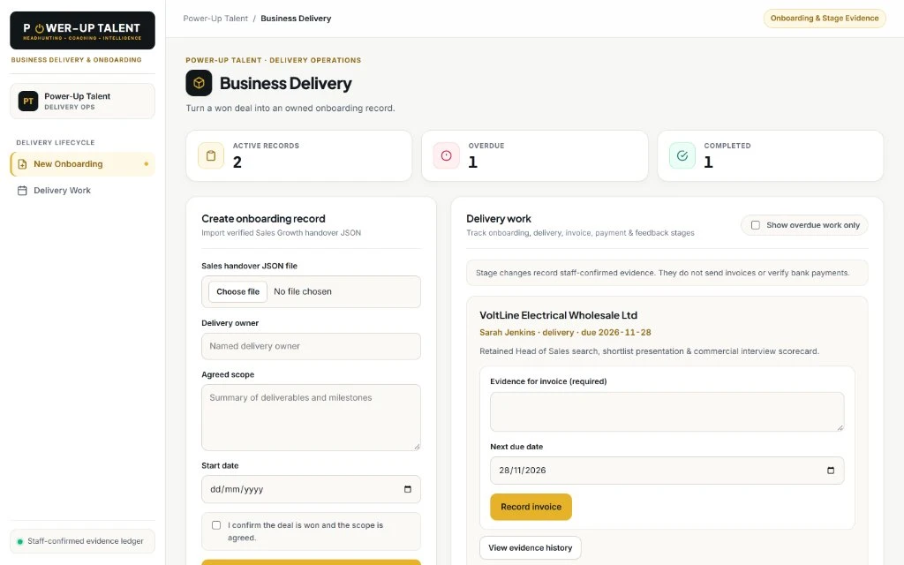

CRM (Business & Personal)
Keep team account history, follow-ups, and 30-day renewals visible while keeping personal networks private.
Explore CRM (Business & Personal) Open in interactive product demoPOWER-UP TALENT | AI BUSINESS SERVICES HUB
Grouped across Find & Win, Manage & Retain, and Deliver & Scale. Each service has its own dedicated page explaining the problems it solves, what you receive and a real workflow example.
SEVEN CONNECTED SYSTEMS
Every platform card below states its commercial outcome, who it is best for, and links to its full detail page and live sample-data demo.
Keep team account history, follow-ups, and 30-day renewals visible while keeping personal networks private.
Explore CRM (Business & Personal) Open in interactive product demoCapture every call, enquiry, and callback in one shared workspace with a named human owner and due date.
Explore Shared Communications Open in interactive product demoSpot UK projects early, track competitor moves, and turn quote pipelines into owned daily actions.
Explore Sales & Intelligence Open in interactive product demoTurn won deals into clean customer onboarding records with agreed scope, start dates, and zero duplicate admin.
Explore Business Delivery Open in interactive product demoBridge sales to delivery with automated, auditable handover receipts so nothing slips through the cracks.
Explore Verified Handovers (Automation) Open in interactive product demoTurn approved company documents into fast, verifiable commercial briefs with final sign-off always in human hands.
Explore Human-Approved AI Team Open in interactive product demoConnect every campaign directly to qualified meetings and won margin—eliminating wasted spend.
Explore Marketing Attribution Open in interactive product demoTAILORED DEMO
Tell us whether you are looking at local Market Intelligence, Prospect Intelligence review, customer enquiries, CRM renewals, overdue quotes, delivery handovers or campaign outcomes — we will walk you through the exact workflow.
GUIDED PRODUCT DEMO · THREE INTERACTIVE SCENARIOS
Select a scenario below, trigger the primary action and see how the workspace state updates immediately. Uses local sample data in your browser — never calls live providers or alters real records.
“Need urgent confirmation on 3-phase distribution board stock and trade account delivery for Monday morning.”
Conversation claimed in the shared inbox. Timed callback scheduled for Today at 14:00 with approved branch stock notes attached.
Scenario 1 ready: sample enquiry ENQ-402 is currently unassigned.
Assessed in Sales & Intelligence with ICP Fit: High and Data Confidence: Verified. Quote reminder is surfaced at the top of the Sales Action Queue.
Customer acceptance recorded. Overdue quote reminder cleared automatically, win milestone logged for Marketing outcomes, and structured Sales handover JSON (Ref HO-2026-041) prepared for Business Delivery.
Structured Sales handover loaded for operator review. Ready to confirm that the deal is won and scope is agreed, and record the delivery owner and start date.
Won deal and agreed scope confirmed. Added to the single onboarding list. If Ref HO-2026-041 is imported or routed again via Automation, Business Delivery detects the reference and preserves this existing record without creating a duplicate.
FROM OPPORTUNITY TO DELIVERY · END-TO-END ROUTE
Walk through how a regional UK distributor moves an opportunity from first local market signal to customer onboarding and campaign outcome attribution.
Clear human checkpoints: Public data lookup, human qualification, named account ownership, and auditable handovers keep commercial teams in control at every stage.
A branch manager searches Leeds (25-mile radius, 90 days, keyword “construction”) across England Planning Data and Find a Tender notices, opening original government records.
The team reviews dated expansion evidence (Source fact → Interpretation → Next step), assigns an owner to the Sales Action Queue, and tracks one active quote.
Account ownership, notes and 30-day renewal review flags live in Business CRM, kept strictly separate from private Personal CRM records.
An urgent branch stock enquiry enters Needs Attention, is claimed by a named team member and gets a dated 14:00 callback.
Using only approved source material, the AI Team drafts a cited brief; a manager requests a revision and records final human sign-off.
Automated handover checks return an explicit receipt distinguishing created, already_exists or unconfirmed so nothing slips through the cracks.
Business Delivery confirms won status, scope, owner and start date with zero duplicate admin; Marketing Attribution compares qualified leads, attended meetings and won margin.
WALKTHROUGH & DEPLOYMENT SCOPE
We walk through how each system fits your branch or commercial team, which live provider connections are configured per tenant, and how human sign-off stays in control.
Step through the guided three-scenario demo on this page, explore the synthetic sample-data views, or combine AI services with Recruitment & Headhunting and Coaching & Development.
CAPTURED FROM THE RUNNING APPS
Real application screens using anonymised sample data across the commercial suite.


